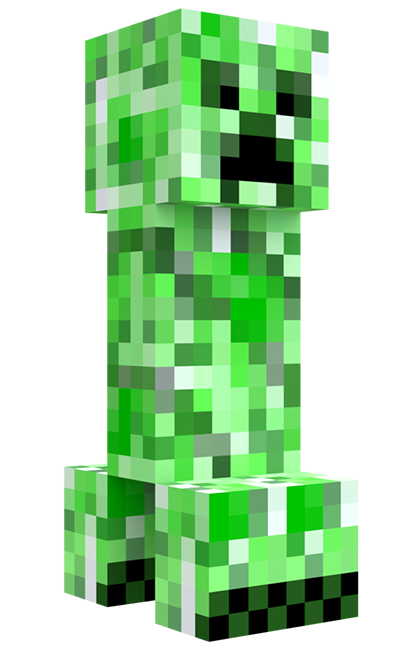

MINECRAFT
O que é Minecraft?
 Minecraft é um dos jogos de sandbox mais icônicos e influentes de todos os tempos, oferecendo aos jogadores liberdade para construir, explorar e interagir em um vasto mundo gerado proceduralmente. Desde seu lançamento em 2009, o jogo se tornou um fenômeno global, definindo um novo padrão na indústria de videogames e atraindo uma enorme comunidade de jogadores de todas as idades. Com sua jogabilidade inovadora e o estilo visual característico de blocos pixelizados, Minecraft continua a encantar e inspirar milhões ao redor do mundo como uma plataforma para criatividade e aventuras sem limites. Open AI Chat GPT
Minecraft é um dos jogos de sandbox mais icônicos e influentes de todos os tempos, oferecendo aos jogadores liberdade para construir, explorar e interagir em um vasto mundo gerado proceduralmente. Desde seu lançamento em 2009, o jogo se tornou um fenômeno global, definindo um novo padrão na indústria de videogames e atraindo uma enorme comunidade de jogadores de todas as idades. Com sua jogabilidade inovadora e o estilo visual característico de blocos pixelizados, Minecraft continua a encantar e inspirar milhões ao redor do mundo como uma plataforma para criatividade e aventuras sem limites. Open AI Chat GPT
Minecraft foi criado por Markus "Notch" Persson, um desenvolvedor de jogos sueco. Ele inicialmente desenvolveu o jogo de forma independente e lançou uma versão alpha em maio de 2009, antes de fundar a Mojang Studios para continuar o desenvolvimento do jogo. Markus Persson é amplamente reconhecido como o criador e principal visionário por trás do conceito inicial e da primeira versão de Minecraft. Open AI Chat GPT
Explore e Sobreviva
Além de ser um jogo de construção, Minecraft é uma experiência de exploração imersiva em um mundo vasto, repleto de segredos intrigantes e perigos inesperados. Os jogadores têm à sua disposição uma gama diversificada de biomas para explorar: desde florestas exuberantes e vastas planícies até montanhas imponentes, oceanos profundos e cavernas misteriosas. Cada um desses ambientes oferece seus próprios desafios únicos e tesouros ocultos, incentivando os aventureiros a se aventurarem em busca de novas descobertas. Open AI Chat GPT
No entanto, essa jornada não é isenta de perigos. Durante a noite, o mundo de Minecraft se transforma, e criaturas sombrias emergem das sombras para desafiar a coragem dos exploradores. De creepers a esqueletos, e de zumbis a aranhas gigantes, monstros de todas as formas e tamanhos vagam livremente, prontos para atacar os desavisados. Assim, os jogadores devem estar preparados para lutar pela própria sobrevivência, utilizando suas habilidades e recursos para enfrentar as ameaças noturnas e proteger suas construções e suas vidas. A cada nascer do sol, uma nova oportunidade se apresenta para explorar e expandir, criando uma dinâmica de desafio constante que atrai milhões de jogadores ao redor do mundo. Open AI Chat GPT
Como funciona?
Colete Recursos

Chegou a hora de colocar mãos à obra e mergulhar na vastidão do ambiente que te rodeia no mundo de Minecraft. Utilize sua astúcia e habilidades para explorar os biomas variados, desde as exuberantes florestas até os picos nevados das montanhas, coletando uma infinidade de materiais preciosos ao longo do caminho. Seja cortando árvores para obter madeira, minerando rochas para extrair minerais valiosos ou coletando plantas e animais para diversos fins, cada ação é uma oportunidade de criar e inovar.
A experiência de coleta de materiais vai além da simples obtenção de recursos; é uma jornada de descoberta e aprendizado. Ao explorar o mundo ao seu redor, você não só adquire os elementos necessários para suas construções, mas também aprende sobre a ecologia e os sistemas naturais que regem o mundo de Minecraft. Cada árvore cortada, cada bloco quebrado, é uma oportunidade para expandir seu conhecimento e habilidades.
Portanto, não subestime o poder da coleta de materiais. Ao cortar árvores, você não apenas obtém madeira para suas construções, mas também contribui para o ciclo natural do ambiente, permitindo o crescimento de novas árvores e a renovação dos recursos. Assim, cada ação que você realiza é uma peça crucial no intricado quebra-cabeça da sobrevivência e prosperidade no mundo de Minecraft. Open AI Chat GPT
Sobreviva à Noite

Em um mundo repleto de perigos e mistérios como o de Minecraft, é sempre prudente manter uma distância segura das criaturas que vagueiam pelos terrenos. Cada esquina esconde possíveis ameaças, e nunca se pode prever com certeza o que está à espreita nas sombras.
Evitar o imprevisível é uma estratégia sábia para garantir a própria segurança e preservar os recursos conquistados com tanto esforço. Criaturas hostis como creepers, esqueletos e zumbis podem surgir a qualquer momento, representando uma ameaça iminente para os desavisados. Portanto, é fundamental manter os sentidos alertas e evitar confrontos desnecessários.
Além disso, ao se manter distante das criaturas, os aventureiros têm a oportunidade de explorar o ambiente com mais tranquilidade, permitindo uma imersão mais profunda nas maravilhas e desafios que o mundo de Minecraft oferece. Ao evitar encontros perigosos, os jogadores podem focar em suas metas e objetivos sem interrupções indesejadas.
Assim, lembre-se sempre: é melhor prevenir do que remediar. Mantenha-se atento aos arredores e mantenha uma distância segura das criaturas hostis. Afinal, em um mundo cheio de incertezas, a cautela é a melhor aliada para a sobrevivência. Open AI Chat GPT
Construa coisas

Explore todo o potencial do pó de minério de redstone e desbloqueie um mundo de possibilidades para aprimorar suas criações em Minecraft. Este recurso versátil não apenas adiciona uma dimensão extra às suas construções, mas também oferece a oportunidade de dar vida e potência às suas invenções de maneiras inovadoras e emocionantes.
Com o pó de minério de redstone, você pode criar dispositivos elétricos complexos, como circuitos de porta lógica, sistemas de automação e mecanismos de defesa avançados. Desde portas automáticas e sistemas de iluminação inteligentes até catapultas e pistões automáticos, as possibilidades são praticamente ilimitadas.
Além disso, o pó de redstone também pode ser usado para melhorar a estética e a funcionalidade de suas criações, adicionando efeitos especiais e interativos. Por exemplo, você pode criar displays de contagem regressiva, efeitos de partículas personalizados e até mesmo dispositivos de comunicação entre jogadores.
Portanto, não subestime o poder do pó de minério de redstone. Ao dominar este recurso fundamental, você pode elevar suas construções a um novo patamar de criatividade e engenhosidade, transformando o mundo de Minecraft em seu próprio playground de inovação e descoberta. Open AI Chat GPT
Mobs
O que são os Mobs?
Criaturas (ou Mobs) são entidades vivas que locomovem-se no ambiente. O termo "mob" é curto para "mobile" (aquilo que se move, móvel). Diferentes tipos de criaturas geralmente possuem inteligência artificial e saques únicos. Abaixo, teremos classes de mobs / criaturas:
- Criaturas passivas
- Criaturas neutras
- Criaturas hostis
- Criaturas chefes
- Criaturas inutilizadas
- Criaturas planejadas
- Criaturas removidas
| Plataformas | Java | Bedrock | |
|---|---|---|---|
| Windows/Mac/Linux |  |
|
|
| Nintendo | |
|
|
| Xbox/Playstation |  |
|
|
| Android/iOS | |
|
Tipos de servidores
Online

Online
Conecte-se e jogue com jogadores de todo o mundo, estejam onde estiverem.
Mundos
Jogue em um mundo personalizado com outros jogadores.
Servidores
Descubra servidores geridos pela comunidade, cheios de atividades e lar de milhares de jogadores.
Realms

Realms
Jogue localmente ou online no seu próprio servidor, um mundo online e persistente, armazenado com segurança na nuvem.
Realms Plus
Obtenha acesso instantâneo a um catálogo com mais de 150 itens de conteúdo do Passe do Marketplace, com novidades divertidas adicionadas todos os meses.
Java Realms
Crie e gerencie seu próprio servidor privado com até 10 amigos.
Coop

Online
Jogue em modo cooperativo local com amigos e familiares no seu dispositivo.
Mundos
Jogue em um mundo personalizado com outros jogadores em uma plataforma compartilhada ou por LAN.
Servidores
Jogue com amigos e familiares em um servidor privado local em dispositivos separados.
Jogos da Franquia


Info: Aperte nos títulos dos jogos acima, para levar à outro Jogo!